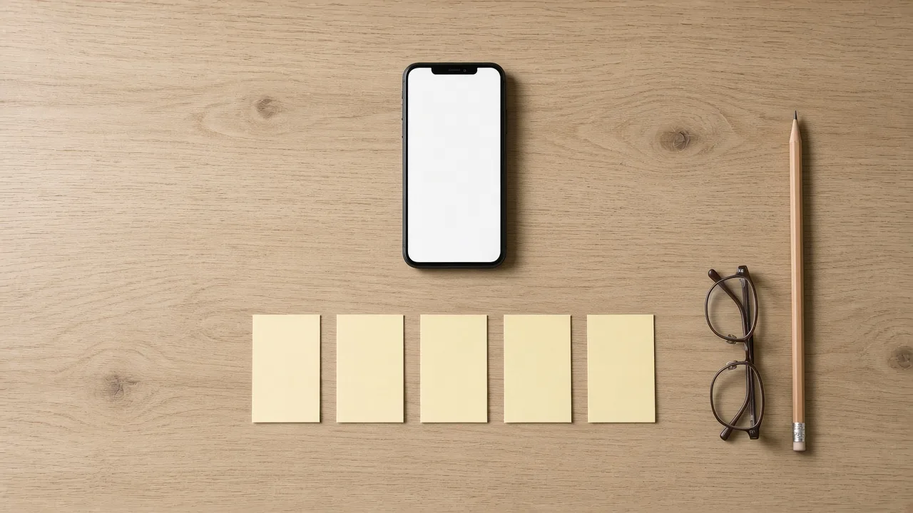

보호자는 센터 홈페이지에서 무엇을 먼저 볼까요?
“센터 홈페이지를 만들려고 하는데, 무엇부터 넣어야 보호자가 보고 전화를 걸까요?”
보호자는 센터 소개보다 ‘우리 부모님이 여기 다닐 수 있을까’를 먼저 확인합니다. ① 우리 동네까지 차가 오는지 ② 비용은 어떻게 정해지는지 ③ 하루를 어떻게 보내고 무엇을 드시는지 ④ 어르신을 어떻게 대해 주는지 ⑤ 어디로 연락하면 되는지. 홈페이지 첫 화면부터 이 순서로 보이면, 보호자가 망설이지 않고 전화할 수 있습니다.

저는 치매가 있는 어머니를 함께 사는 집에서 8년째 돌보고 있습니다. 어머니는 방금 있었던 일을 기억하지 못하세요. 그래서 센터를 알아볼 때 가장 걱정됐던 건 이 두 가지였어요.
“건강한 식단으로 식사는 잘 드실까?”
주야간보호센터에서 요양보호사로 일했던 저도, 보호자 자리에 서니 센터 인사말이나 연혁보다 이런 답을 먼저 찾게 되었습니다. 센터 홈페이지는 보호자의 이 질문에 먼저 답하는 곳이어야 한다고 생각합니다.
보호자가 휴대폰으로 확인하는 다섯 가지
| 먼저 보는 것 | 보호자의 마음 | 홈페이지에 이렇게 |
|---|---|---|
| ① 송영 | “우리 집까지 차가 올까?” | 송영하는 동 이름을 구체적으로 |
| ② 비용 | “한 달에 얼마쯤 들까?” | 비용이 정해지는 방식과 따로 드는 비용 |
| ③ 하루 일과·식사 | “하루 종일 무엇을 하시고, 무엇을 드실까?” | 오전·점심·오후 일과표와 식단 사진 |
| ④ 대하는 모습 | “소홀히 대하지는 않을까?” | 돌보는 방식, 직원 소개, 처음 적응을 돕는 방법 |
| ⑤ 연락 | “어디로 물어보면 되지?” | 화면 아래에 늘 보이는 전화·카톡 버튼 |
제가 보호자로서 궁금했던 것과, 보호자가 전화하기 전에 찾는 정보를 순서대로 정리한 표입니다. 센터마다 강조할 곳은 다를 수 있습니다.
① 송영 지역은 동 이름으로 적습니다
보호자에게 송영은 가장 먼저 걸러지는 조건입니다. 아무리 좋은 센터라도 집까지 차가 오지 않으면 다니기 어렵습니다. “수원 전 지역”보다 “권선구 권선동·세류동·고색동”처럼 동 이름으로 적어 주세요. 동네 이름으로 검색하는 보호자에게도 보이기 쉬워집니다.
위 동 이름은 설명을 위한 예시입니다. 실제로 송영하지 않는 동은 적지 않습니다.
② 비용은 금액 하나보다 ‘정해지는 방식’을
비용은 장기요양 등급과 이용 일수에 따라 달라서 금액 하나로 적기 어렵습니다. 그래도 보호자가 짐작할 수 있게 어떻게 정해지는지는 알려 드릴 수 있습니다.
- 장기요양 급여의 본인부담금은 등급·이용 일수·감경 여부에 따라 달라진다는 것
- 식재료비·간식비처럼 따로 드는 비용이 있는지
- 정확한 금액은 상담 때 계산해 드린다는 것
예시 금액을 보여 줄 때는 ‘예시’라고 분명히 적고, 매년 바뀌는 장기요양 수가에 맞춰 고쳐야 합니다. 마케팅지니의 샘플 센터 홈페이지에는 등급과 이용 일수를 고르면 예상 금액을 보여 주는 계산기 예시가 있습니다.
③ 하루 일과와 식사는 사진과 한 줄 설명으로
“우리 부모님이 거기서 하루 종일 무엇을 하실까?”, “식사는 잘 드실까?” 보호자는 이 두 가지가 늘 마음에 걸립니다.
- 도착부터 귀가까지 오전·점심·오후로 나눈 하루 일과표 한 장
- 프로그램 사진마다 “인지활동 — 숫자 맞추기”처럼 이름과 한 줄 설명
- 점심·간식 식단 사진, 그리고 어르신 상태에 맞춘 식사(잘게 썬 음식 등)를 실제로 준비하는지
사진은 사용에 동의받은 것만 쓰고, 어르신 얼굴은 모자이크해 주세요. 사람이 나온 사진이 없어도 식단·공간·프로그램 도구 사진만으로 센터의 하루가 그려집니다.
④ 어르신을 어떻게 대해 주는지 보여 줍니다
제가 가장 걱정했던 부분입니다. 기억을 잘 못 하시는 어르신은 센터에서 있었던 일을 집에 와서 말씀하지 못하세요. 그래서 보호자는 화면에서라도 센터 안의 모습을 보고 싶어 합니다.
- 어르신을 돌보는 방식 — 예: 처음 오신 날 어떻게 적응을 돕는지, 이동이나 화장실 이용을 어떻게 돕는지
- 직원 소개 — 센터에 실제로 있는 직원의 직함과 한 줄 소개 (얼굴 사진이 없어도 괜찮습니다)
- 보호자에게 하루 소식을 어떻게 전하는지 — 센터가 실제로 쓰는 방법 그대로
“정성껏 모십니다” 같은 말보다, 실제로 하는 일을 한 줄씩 적는 편이 보호자의 마음에 남습니다.
⑤ 연락 버튼은 화면 아래에 늘
다 읽고 전화하려는데 번호가 안 보이면 보호자는 그냥 다음 센터를 봅니다. 휴대폰 화면 아래에 전화·카톡 버튼이 늘 보이게 하고, 상담 가능한 시간과 견학 방법도 함께 적어 주세요. 만든 뒤에는 직접 눌러서 지금 받는 번호로 걸리는지 꼭 확인합니다.
뒤로 미뤄도 되는 것
긴 인사말, 연혁, “최고의 서비스” 같은 문구는 첫 화면에서 빼고 아래로 내려도 괜찮습니다. 보호자가 먼저 찾는 다섯 가지를 앞에 두고, 센터의 이야기는 그다음에 보여 주면 됩니다.
우리 센터 홈페이지 점검표
휴대폰으로 우리 센터 홈페이지를 열고 하나씩 체크해 보세요.
- 첫 화면에 센터 이름·지역·전화 버튼이 보여요
- 송영하는 동 이름이 적혀 있어요
- 비용이 정해지는 방식과 따로 드는 비용이 있어요
- 하루 일과표가 있어요
- 식단이나 식사 모습을 볼 수 있어요
- 어르신을 돌보는 방식이나 직원 소개가 있어요
- 상담 가능한 시간과 견학 방법이 있어요
- 화면 아래 전화·카톡 버튼이 늘 보여요
빈칸이 있어도 괜찮습니다. 하나씩 채우면 됩니다. 다만 실제로 하지 않는 것은 적지 않는 것이 가장 중요합니다.
홈페이지가 없다면
블로그와 플레이스에도 이 다섯 가지를 담을 수 있습니다. 다만 글이 여러 편에 흩어지면 보호자가 한눈에 비교하기 어렵고, 네이버 블로그는 ChatGPT 같은 바깥 AI가 글을 가져가지 못하게 막혀 있습니다(2026년 11월 확인, 관련 작업 노트). 그래서 센터 이름으로 된 홈페이지 한 장에 모아 두면 보호자와 AI 검색 모두에 도움이 될 수 있습니다.
마케팅지니는 이 순서대로 센터 홈페이지를 만들고 플레이스에 연결합니다. 무료 진단에서는 지금 있는 홈페이지·블로그·플레이스를 보호자 눈으로 살펴보고, 다섯 가지 중 빠진 것을 화면 캡처와 함께 정리해 드립니다. 센터에서 바로 고칠 수 있는 것이라면 그렇게 말씀드립니다.
우리 센터 홈페이지, 보호자 눈에는 어떻게 보일까요?
센터 이름과 지역만 보내 주시면, 다섯 가지 중 빠진 곳을 정리해 드립니다.
자주 묻는 질문
센터 홈페이지가 꼭 있어야 하나요?
블로그와 플레이스만으로도 정보를 알릴 수 있습니다. 다만 비용·하루 일과·연락처를 한 장에 모은 홈페이지가 있으면 보호자가 비교하기 쉽고, 네이버 블로그는 바깥 AI가 글을 가져가지 못하게 막아 두어(2026년 11월 확인) 센터 이름으로 된 홈페이지가 AI 검색에 대비하는 바탕이 될 수 있습니다. 검색이나 AI 추천에 나온다고 약속할 수는 없습니다.
홈페이지에 비용을 금액으로 적어도 되나요?
비용은 장기요양 등급과 이용 일수, 감경 여부에 따라 달라 한 가지 금액으로 적기 어렵습니다. 비용이 정해지는 방식과 따로 드는 비용을 적고, 예시 금액을 보여 줄 때는 ‘예시’라고 표시한 뒤 매년 바뀌는 수가에 맞춰 고쳐 주세요.
어르신 사진을 홈페이지에 올려도 되나요?
사용에 동의받은 사진만 쓰고, 어르신 얼굴은 모자이크하는 것이 좋습니다. 사진이 부족하면 식단·공간·프로그램 도구 사진이나 그림으로도 센터의 하루를 보여 줄 수 있습니다.
마케팅지니에 홈페이지를 맡기면 비용은 얼마인가요?
센터 홈페이지 제작은 25만 원이고, 부가세 10%와 도메인 비용(1년 2~3만 원 안팎)은 별도입니다. 블로그·플레이스 정리와 블로그 글 15편까지 함께하는 시작 패키지는 50만 원입니다.
참고한 곳
- 국민건강보험공단 노인장기요양보험 — 장기요양 등급과 급여 이용 안내
- 마케팅지니 샘플 센터 홈페이지 — 비용 계산기·하루 일과·오시는 길 예시 (가상의 샘플 센터)